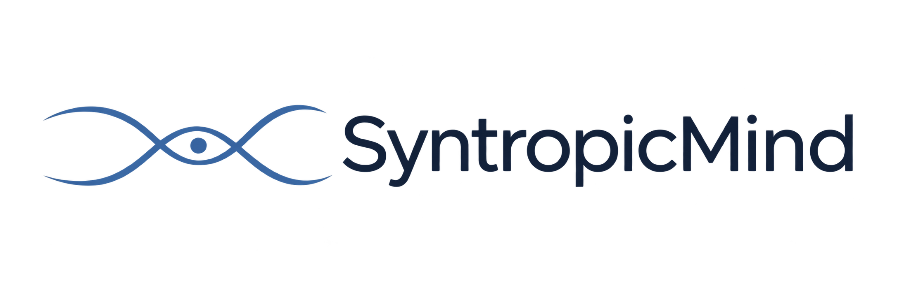

Pular para o conteúdo

Visão geral
SF-36
Sono
Relatório SF-36
Relatório do sono
SyntropicMind / Comparação
Perspectivas lado a lado.
Compare avaliações nos diferentes domínios de qualidade de vida.
FORMAS EM EQUILÍBRIO
Comparativo Multidimensional 3D
Encontre sua aplicação pelas Iniciais e Data; adicione outras para comparar.
Selecione uma Avaliação:
Aguarde, carregando banco de dados...
+ Adicionar ao Gráfico
Limpar Tudo